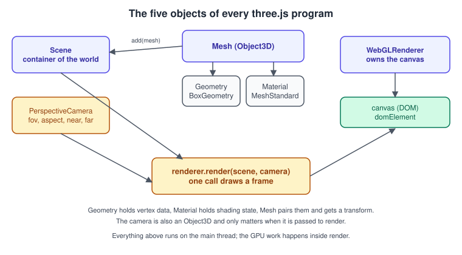
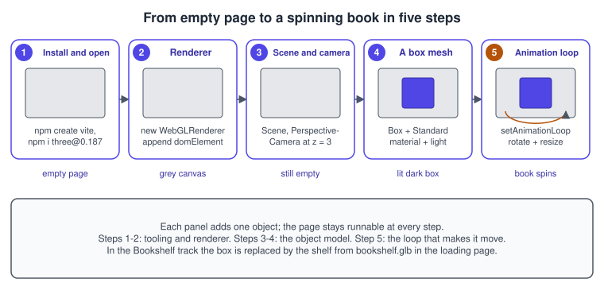
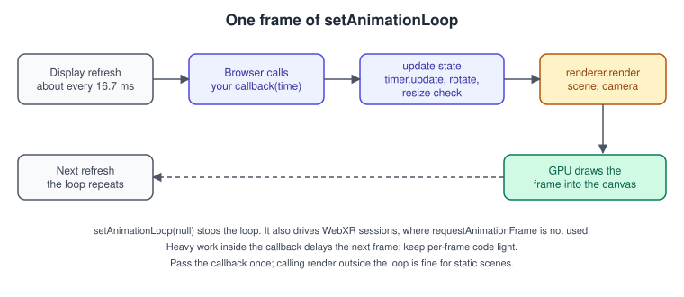
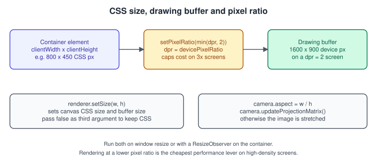

three.js: Getting Started
|
This content was generated with the assistance of AI and should be verified against the official documentation before being relied on in production. |
three.js is a JavaScript library that wraps WebGL (and, since the three/webgpu entry point, WebGPU) in a scene-oriented API. Instead of
compiling shaders and filling buffers by hand, as in The First Triangle in WebGL 2,
you create objects (a scene, a camera, meshes with geometry and material) and ask a renderer to draw them. This page is the entry
point of the three.js track: it sets up a project, explains the five objects every program uses, builds the render loop and handles
resizing, and ends with the first Bookshelf step, a lit book that rotates.
The facts were checked in November 2026. The version documented is three.js r187 (npm package three@0.187.0, published on 30 October 2026).
The library is released roughly monthly and the API is not frozen, so the migration guide is worth reading when you upgrade.
The examples are ES modules and need a browser with WebGL 2 (Chrome 56, Firefox 51, Safari 15 or Edge 79 and newer, about 97 percent of
global usage), Node.js with npm for the Vite route, and an HTTP server of any kind; they do not work from file://. Since r163
WebGLRenderer no longer supports WebGL 1, so a device with only WebGL 1 cannot use the classic renderer at all.
Where the earlier pages of this sub-section used a raw context, from here on the Bookshelf example uses the library:
the GLB shelf and books from bookshelf.glb, PBR materials, OrbitControls, picking, a
"catch the falling books" game, bloom and finally WebGPURenderer. The next steps are
Scene Graph and Transforms and
Loading Models with glTF. For a very short comparison of a raw WebGL triangle with
a three.js cube see the existing page on
canvas and WebGL in the browser; the differences between raw WebGL 2 and
desktop OpenGL are in OpenGL and WebGL.
Two ways to use the library
three.js is distributed as ES modules. Two setups are common, and both give identical code in your main.js.
| Route | How it works | Choose it when |
|---|---|---|
npm and a bundler (Vite) |
|
You build an application or a game, want TypeScript, use many addons or need a production build. This is the recommended route. |
Import map and a static server |
An |
Prototypes, teaching, small demos, or pages embedded in a CMS. |
Both routes use the same module names:
-
import * as THREE from 'three'imports the core: scene objects, geometries, materials,WebGLRenderer, loaders, maths. -
import { OrbitControls } from 'three/addons/controls/OrbitControls.js'imports an addon. Addons are the code that used to be copied from theexamples/jsmfolder (controls, loaders, post-processing passes, helpers). Older guides used the global<script>files fromexamples/js; those were removed in r148. -
import { WebGPURenderer } from 'three/webgpu'andimport { float, vec3 } from 'three/tsl'are the entry points for the WebGPU renderer and the Three Shading Language; see WebGPURenderer and TSL.
Source: three.js manual: Installation
Route 1: npm and Vite
Vite is a development server and bundler for ES modules. It needs Node.js (see the existing pages on JavaScript modules and tooling, bundling and publishing for background).
npm create vite@latest bookshelf-three -- --template vanilla
cd bookshelf-three
npm install three@0.187.0
npm install --save-dev vite
npx vite # development server with hot reload, usually http://localhost:5173
npx vite build # production build into dist/Source: three.js manual: Installation
Pinning the exact version (0.187.0) is deliberate: three.js reserves the right to change the API in any release, and the revision number
(r187) is the minor version of the package. Dependency ranges such as ^0.187.0 do not accept newer minor versions in the 0.x range, which
suits a library that breaks things monthly.
The project then contains an index.html that hosts a <canvas> or an empty container and a module script:
<!doctype html>
<html lang="en">
<head>
<meta charset="utf-8">
<meta name="viewport" content="width=device-width, initial-scale=1">
<title>Bookshelf with three.js</title>
<style>
html, body { margin: 0; height: 100%; background: #1f2937; }
#app { width: 100%; height: 100%; }
</style>
</head>
<body>
<div id="app"></div>
<script type="module" src="/main.js"></script>
</body>
</html>Source: Vite guide: Getting started
Route 2: an import map
With no build tool, an import map in the page tells the browser where to find the bare names three and three/addons/. The files can come
from your own server (copy build/three.module.js and the examples/jsm folder from the npm package) or from a CDN that serves npm packages.
Use an exact version in the URL, never a floating tag.
<!doctype html>
<html lang="en">
<head>
<meta charset="utf-8">
<meta name="viewport" content="width=device-width, initial-scale=1">
<title>Bookshelf with three.js</title>
<style>html, body { margin: 0; height: 100%; } #app { width: 100%; height: 100%; }</style>
<script type="importmap">
{
"imports": {
"three": "https://cdn.jsdelivr.net/npm/three@0.187.0/build/three.module.js",
"three/addons/": "https://cdn.jsdelivr.net/npm/three@0.187.0/examples/jsm/"
}
}
</script>
</head>
<body>
<div id="app"></div>
<script type="module" src="./main.js"></script>
</body>
</html>Source: three.js manual: Installation
Import maps are supported by all current evergreen browsers. The map must appear before the first module script, and the page must be served
over HTTP. Addons import three by its bare name, so the same map resolves it for them too. Loading from a CDN also needs the CDN to send CORS
headers for modules; see WebGL Security, CORS and Privacy.
The five objects of every program

| Object | Role | Raw WebGL equivalent |
|---|---|---|
|
The root of a tree of objects to draw. Holds background, fog and the environment map. Everything visible is added to it directly or through a parent. |
Your own list of things to draw each frame. |
|
Defines the view and the projection (field of view, aspect ratio, near and far planes). It is itself an |
The view and projection matrices of Transforms and Cameras. |
|
An |
A VAO with its buffers, a program and the uniforms for one draw call. |
|
Owns the canvas and the WebGL 2 context; each |
The whole of the first-triangle code, repeated for every object. |
Light |
Not strictly needed (an unlit |
The lighting uniforms of Lighting in Shaders. |
Geometry and material are covered in Geometry and Materials and PBR. This page uses one box and one standard material.
Step by step: from an empty page to a spinning book

-
Install and open an empty page. Use Route 1 or Route 2 above.
-
Create the renderer and add its
domElement(the canvas) to the page. -
Create the scene and the camera. Move the camera back, because both start at the origin.
-
Add a mesh and a light. A box with a standard material, plus a directional light and a little ambient light.
-
Start the loop with
setAnimationLoop, rotate the box inside it and handle resizing.
The complete program for the five steps follows. It is the first step of the three.js track of the Bookshelf example: a book-shaped box
(a thin cuboid) stands in for the model that is loaded later from bookshelf.glb.
// main.js
import * as THREE from 'three';
const container = document.getElementById('app');
// 2. Renderer
const renderer = new THREE.WebGLRenderer({ antialias: true });
renderer.setPixelRatio(Math.min(window.devicePixelRatio, 2));
renderer.setSize(container.clientWidth, container.clientHeight);
container.appendChild(renderer.domElement);
// 3. Scene and camera
const scene = new THREE.Scene();
scene.background = new THREE.Color(0x1f2937);
const camera = new THREE.PerspectiveCamera(
50, // vertical field of view in degrees
container.clientWidth / container.clientHeight, // aspect ratio
0.1, // near plane
100, // far plane
);
camera.position.set(0, 0.6, 3);
camera.lookAt(0, 0, 0);
// 4. A book-shaped box and light
const book = new THREE.Mesh(
new THREE.BoxGeometry(1, 1.4, 0.25),
new THREE.MeshStandardMaterial({ color: 0xb45309, roughness: 0.6, metalness: 0 }),
);
scene.add(book);
const sun = new THREE.DirectionalLight(0xffffff, 3);
sun.position.set(2, 3, 4);
scene.add(sun);
scene.add(new THREE.AmbientLight(0xffffff, 0.4));
// 5. Loop and resize
const timer = new THREE.Timer();
function animate(timestamp) {
timer.update(timestamp);
book.rotation.y += 0.8 * timer.getDelta(); // radians per second, independent of frame rate
renderer.render(scene, camera);
}
renderer.setAnimationLoop(animate);
function onResize() {
const { clientWidth: w, clientHeight: h } = container;
renderer.setSize(w, h);
camera.aspect = w / h;
camera.updateProjectionMatrix();
}
new ResizeObserver(onResize).observe(container);Three details of this listing deserve attention. The camera looks down the negative Z axis by default, and the box is at the origin, so a
camera at positive Z sees it. The directional light intensity of 3 looks high next to old guides, but light units have been physically
based since r155 (legacy lights were removed from the defaults then), and the default decay of point and spot lights is 2; see
Lights and Shadows. And the Timer is used instead of the older Clock:
Clock is deprecated since r183.
The renderer in detail
new THREE.WebGLRenderer(parameters) takes a single object. All parameters are optional and are read only at construction, so changing
them later needs a new renderer.
| Parameter | Default | What it does |
|---|---|---|
|
a new |
Use an existing canvas instead of creating one. Also how a worker passes an |
|
|
Requests multisampling on the default framebuffer. The browser may ignore it. It costs memory and fill rate, particularly together with post-processing, which uses its own targets. |
|
|
Gives the canvas an alpha channel so the page behind it shows through where |
|
|
A hint: |
|
|
Whether the default framebuffer has a depth buffer and a stencil buffer. Turn depth off only for pure 2D scenes. |
|
|
Keeps the frame after compositing so |
|
|
Passed to the context: fail instead of using a software renderer. |
|
|
Improves depth precision for scenes with huge size ranges at a performance cost. |
Source: three.js docs: WebGLRenderer
After construction the commonly used properties are:
| Property or method | Purpose |
|---|---|
|
Resizes the drawing buffer to |
|
The ratio between CSS pixels and drawing-buffer pixels. See the resizing section below. |
|
|
|
|
|
|
|
Counters for draw calls, triangles, geometries and textures. Useful in every performance investigation. |
|
Releases the renderer resources. Geometries, materials and textures need their own |
The books of the 2015 era (LTJ, TCB) set renderer.gammaInput and renderer.gammaOutput; both properties were removed in favour of colour management.
Cameras
PerspectiveCamera(fov, aspect, near, far) is the camera for 3D scenes. The parameters mean:
| Parameter | Meaning | Pitfall |
|---|---|---|
|
Vertical field of view in degrees. 35 to 60 is typical for objects, 60 to 90 for first person. |
Large values distort the edges; changing it needs |
|
Canvas width divided by height. |
Not updating it after a resize stretches the image. |
|
The distances of the clipping planes along the viewing direction. |
A very small |
OrthographicCamera(left, right, top, bottom, near, far) has no perspective: parallel lines stay parallel and size does not depend on distance.
It suits 2D games, isometric views and shadow cameras. Cameras are explained in more detail in
Transforms and Cameras, and the controls that move them in
Interaction, Picking and Controls.
Source: three.js docs: PerspectiveCamera
The render loop

renderer.setAnimationLoop(callback) calls callback(time) once per display refresh until it is given null. Internally the renderer uses
requestAnimationFrame, but when a WebXR session is active it switches to the headset frame callback, which is why it replaces
hand-written requestAnimationFrame loops in three.js code. The timestamp argument is in milliseconds, as in requestAnimationFrame.
For the browser side of animation timing see the existing page on
browser animations.
Animation speed must not depend on the display refresh rate (60, 120 or 144 Hz). Scale every change by the elapsed time:
import * as THREE from 'three';
const timer = new THREE.Timer();
timer.connect(document); // pauses time while the tab is hidden, so the first frame after returning is not a huge jump
function animate(timestamp) {
timer.update(timestamp);
const dt = timer.getDelta(); // seconds since the previous update
const t = timer.getElapsed(); // seconds since the timer started
book.rotation.y += 0.8 * dt;
book.position.y = Math.sin(t * 2) * 0.05;
renderer.render(scene, camera);
}
renderer.setAnimationLoop(animate);Source: three.js docs: Timer
Timer was added to the core as the replacement for Clock (which is deprecated since r183). The difference is that a timer is updated
once per frame by you, so getDelta() returns the same value however many times it is called in that frame, while Clock.getDelta()
measured from the previous call. connect(document) listens to the page visibility so a hidden tab does not accumulate time.
If an animation system or a physics step runs several times in a frame, they all see the same dt.
Rules for the loop body:
-
Do as little as possible: input handling, state updates, then one
rendercall. A slow callback delays the next frame; see Game Loop and Frame Timing for fixed time steps. -
Never create geometries, materials or textures inside the loop. Create them once and reuse them.
-
Static scenes can render on demand: call
renderonly when something changed, and leave the loop off. See Performance and Disposal. -
Stop the loop with
renderer.setAnimationLoop(null)when the canvas is removed from the page.
Resizing and pixel ratio

A canvas has two sizes: the size it occupies on the page (CSS pixels) and the size of its drawing buffer (device pixels). On a high-density
screen the second should be larger, or the image looks blurry. setPixelRatio and setSize handle both, and the camera must
follow, because the projection depends on the aspect ratio.
function resize(renderer, camera, container) {
const width = container.clientWidth;
const height = container.clientHeight;
renderer.setPixelRatio(Math.min(window.devicePixelRatio, 2)); // cap the cost on 3x screens
renderer.setSize(width, height); // CSS size and buffer size
camera.aspect = width / height;
camera.updateProjectionMatrix(); // required after changing aspect, fov, near or far
}
const observer = new ResizeObserver(() => resize(renderer, camera, container));
observer.observe(container);
resize(renderer, camera, container);Pitfalls:
-
Using
window.innerWidthandwindow.innerHeightfor a canvas that does not fill the window gives the wrong aspect ratio. Measure the container. -
window.addEventListener('resize', ...)does not fire when the container changes without the window changing (a sidebar opens). AResizeObserverdoes. -
The pixel ratio can change at run time, for example when the window moves between monitors. Calling
setPixelRatioinside the resize handler picks it up on the next resize. -
Drawing-buffer pixels cost fill rate roughly in proportion to their number: a ratio of 2 renders four times the pixels. Capping at 2, or lowering to 1.5 on weak devices, is the cheapest performance lever.
Errors and unsupported devices
Creating a WebGLRenderer throws when WebGL 2 is not available (the error message reads that the context could not be created), and the
context can also be lost later. A small guard gives users a message instead of a blank page:
import * as THREE from 'three';
function createRenderer(container) {
try {
const renderer = new THREE.WebGLRenderer({ antialias: true, powerPreference: 'high-performance' });
container.appendChild(renderer.domElement);
renderer.domElement.addEventListener('webglcontextlost', (event) => {
event.preventDefault(); // allow restoration
renderer.setAnimationLoop(null);
});
renderer.domElement.addEventListener('webglcontextrestored', () => {
renderer.setAnimationLoop(animate); // three.js re-creates its GPU resources on demand
});
return renderer;
} catch (error) {
container.textContent = 'This demo needs WebGL 2, which this browser or device does not provide.';
console.error(error);
return null;
}
}Source: three.js docs: WebGLRenderer
Detector.js from the early books was replaced by the WebGL compatibility module of the addons. A try/catch around construction, as above, is
the simplest portable check. The full recovery story is in
Context Loss and Robustness.
TypeScript
The package ships no type declarations of its own; the types come from @types/three, whose version should match the revision of three.
npm install three@0.187.0
npm install --save-dev typescript @types/threeSource: three.js manual: Installation
With the vanilla-ts Vite template, the code above runs after renaming main.js to main.ts and adding types such as const container =
document.getElementById('app') as HTMLDivElement.
Where this fits and what comes next
The three.js track of the Bookshelf example continues like this: this page gives the empty stage (renderer, camera, loop). The scene graph page
places the shelf and the books in a hierarchy. The loading page replaces the box with the models from bookshelf.glb. Materials, lights,
controls, picking, the tiny game, bloom and the WebGPU renderer build on the same main.js. Keep the structure of this page’s program
(create once, update in the loop, resize through one function) because every later step adds to it without changing the shape.
Where the books are outdated
PAR, LTJ and TCB all start with a three.js "hello world". The overall structure (scene, camera, renderer, loop) is unchanged, but most lines of the old listings have changed:
| Old (books, about r49 to r69) | Today (r187) |
|---|---|
|
ES modules through npm or an import map; addons from |
Local files opened from |
A development server (Vite) or any static server; see WebGL Security, CORS and Privacy. |
|
|
|
|
|
|
|
|
|
|
Chapter 2 and 8 of PAR: Sim.js as a framework, tween libraries |
Plain modules; the animation system and |
The full list of removals with their revisions is in the three.js migration guide.
Source: three.js Migration Guide
References
-
three.js manual: https://threejs.org/manual/
-
three.js manual, Installation: https://threejs.org/manual/#en/installation
-
three.js manual, Creating a scene: https://threejs.org/manual/#en/creating-a-scene
-
three.js manual, Responsive design: https://threejs.org/manual/#en/responsive
-
three.js documentation: https://threejs.org/docs/
-
three.js releases: https://github.com/mrdoob/three.js/releases
-
three.js Migration Guide: https://github.com/mrdoob/three.js/wiki/Migration-Guide
-
Vite guide: https://vite.dev/guide/
-
MDN, WebGL API: https://developer.mozilla.org/en-US/docs/Web/API/WebGL_API
-
MDN, ResizeObserver: https://developer.mozilla.org/en-US/docs/Web/API/ResizeObserver
-
MDN, JavaScript import maps: https://developer.mozilla.org/en-US/docs/Web/HTML/Reference/Elements/script/type/importmap
-
WebGL: Up and Running (publisher page): https://www.oreilly.com/library/view/webgl-up-and/9781449326487/
-
Learning Three.js, second edition (publisher page): https://www.packtpub.com/en-us/product/learning-threejs-the-javascript-3d-library-for-webgl-second-edition-9781784392215
-
Three.js Cookbook (publisher page): https://www.packtpub.com/product/threejs-cookbook/9781783981182